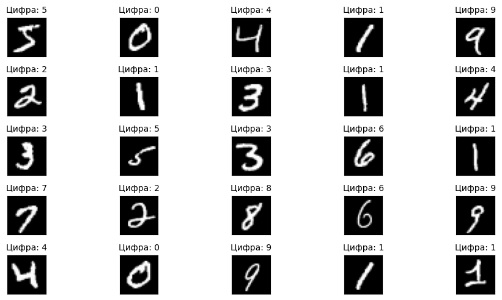
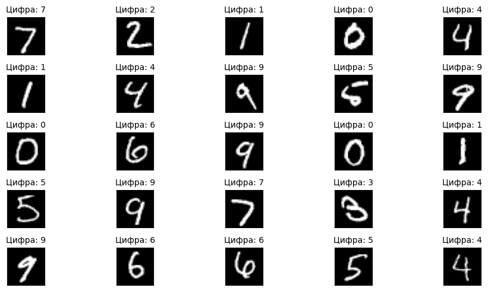

Выполнил: Ермолаев Илья группа 3823М1ФИии2
# Установка Kaggle API
!pip install kaggleRequirement already satisfied: kaggle in /usr/local/lib/python3.11/dist-packages (1.6.17)
Requirement already satisfied: six>=1.10 in /usr/local/lib/python3.11/dist-packages (from kaggle) (1.17.0)
Requirement already satisfied: certifi>=2023.7.22 in /usr/local/lib/python3.11/dist-packages (from kaggle) (2025.1.31)
Requirement already satisfied: python-dateutil in /usr/local/lib/python3.11/dist-packages (from kaggle) (2.8.2)
Requirement already satisfied: requests in /usr/local/lib/python3.11/dist-packages (from kaggle) (2.32.3)
Requirement already satisfied: tqdm in /usr/local/lib/python3.11/dist-packages (from kaggle) (4.67.1)
Requirement already satisfied: python-slugify in /usr/local/lib/python3.11/dist-packages (from kaggle) (8.0.4)
Requirement already satisfied: urllib3 in /usr/local/lib/python3.11/dist-packages (from kaggle) (2.3.0)
Requirement already satisfied: bleach in /usr/local/lib/python3.11/dist-packages (from kaggle) (6.2.0)
Requirement already satisfied: webencodings in /usr/local/lib/python3.11/dist-packages (from bleach->kaggle) (0.5.1)
Requirement already satisfied: text-unidecode>=1.3 in /usr/local/lib/python3.11/dist-packages (from python-slugify->kaggle) (1.3)
Requirement already satisfied: charset-normalizer<4,>=2 in /usr/local/lib/python3.11/dist-packages (from requests->kaggle) (3.4.1)
Requirement already satisfied: idna<4,>=2.5 in /usr/local/lib/python3.11/dist-packages (from requests->kaggle) (3.10)
# Импорт библиотек
import numpy as np
import pandas as pd
import matplotlib.pyplot as plt
from sklearn.model_selection import train_test_split
import gzip
import struct
import time
from array import array
from os.path import join
%matplotlib inline
import random
import matplotlib.pyplot as pltfrom google.colab import userdata
import os
os.environ["KAGGLE_KEY"] = userdata.get('KAGGLE_KEY')
os.environ["KAGGLE_USERNAME"] = userdata.get('KAGGLE_USERNAME')Загружаем данные MNIST датасета из Kaggle
# Скачивание датасета MNIST с Kaggle
!kaggle datasets download -d hojjatk/mnist-dataset
# Распаковка архива
!unzip mnist-dataset.zipWarning: Looks like you're using an outdated API Version, please consider updating (server 1.7.4.2 / client 1.6.17)
Dataset URL: https://www.kaggle.com/datasets/hojjatk/mnist-dataset
License(s): copyright-authors
mnist-dataset.zip: Skipping, found more recently modified local copy (use --force to force download)
Archive: mnist-dataset.zip
replace t10k-images-idx3-ubyte/t10k-images-idx3-ubyte? [y]es, [n]o, [A]ll, [N]one, [r]ename: A
inflating: t10k-images-idx3-ubyte/t10k-images-idx3-ubyte
inflating: t10k-images.idx3-ubyte
inflating: t10k-labels-idx1-ubyte/t10k-labels-idx1-ubyte
inflating: t10k-labels.idx1-ubyte
inflating: train-images-idx3-ubyte/train-images-idx3-ubyte
inflating: train-images.idx3-ubyte
inflating: train-labels-idx1-ubyte/train-labels-idx1-ubyte
inflating: train-labels.idx1-ubyte
Считываем MNIST dataset
class MnistDataloader(object):
def __init__(self, training_images_filepath,training_labels_filepath,
test_images_filepath, test_labels_filepath):
self.training_images_filepath = training_images_filepath
self.training_labels_filepath = training_labels_filepath
self.test_images_filepath = test_images_filepath
self.test_labels_filepath = test_labels_filepath
def read_images_labels(self, images_filepath, labels_filepath):
labels = []
with open(labels_filepath, 'rb') as file:
magic, size = struct.unpack(">II", file.read(8))
if magic != 2049:
raise ValueError('Magic number mismatch, expected 2049, got {}'.format(magic))
labels = array("B", file.read())
with open(images_filepath, 'rb') as file:
magic, size, rows, cols = struct.unpack(">IIII", file.read(16))
if magic != 2051:
raise ValueError('Magic number mismatch, expected 2051, got {}'.format(magic))
image_data = array("B", file.read())
images = []
for i in range(size):
images.append([0] * rows * cols)
for i in range(size):
img = np.array(image_data[i * rows * cols:(i + 1) * rows * cols])
img = img.reshape(28, 28)
images[i][:] = img
return images, labels
def load_data(self):
x_train, y_train = self.read_images_labels(self.training_images_filepath, self.training_labels_filepath)
x_test, y_test = self.read_images_labels(self.test_images_filepath, self.test_labels_filepath)
return (np.array(x_train), np.array(y_train)),(np.array(x_test), np.array(y_test))Прописываем пути до изображений
training_images_filepath = 'train-images-idx3-ubyte/train-images-idx3-ubyte'
training_labels_filepath = 'train-labels-idx1-ubyte/train-labels-idx1-ubyte'
test_images_filepath = 't10k-images-idx3-ubyte/t10k-images-idx3-ubyte'
test_labels_filepath = 't10k-labels-idx1-ubyte/t10k-labels-idx1-ubyte'mnist_dataloader = MnistDataloader(training_images_filepath, training_labels_filepath, test_images_filepath, test_labels_filepath)
(X_train, y_train), (X_test, y_test) = mnist_dataloader.load_data()Нормализуем данные:
X_train = X_train / 255.0
X_test = X_test / 255.0Выведем несколько изображений цифр из тренировочной и тестовой выборок:
def print_img(images, labels):
plt.figure(figsize=(10, 5))
fig, axes = plt.subplots(5, 5, figsize=(10, 5))
for i in range(25):
row, col = divmod(i, 5)
ax = axes[row, col]
ax.imshow(images[i], cmap='gray')
ax.set_xticks([])
ax.set_yticks([])
ax.set_title(f"Цифра: {labels[i]}", fontsize=10, color='black')
plt.tight_layout()
plt.show()Изображения тренировочной выборки:
print_img(X_train, y_train)<Figure size 1000x500 with 0 Axes>
Изображения тестовой выборки:
print_img(X_test, y_test)<Figure size 1000x500 with 0 Axes>
X_train.shape(60000, 28, 28)Преобразуем в одномерные вектора
X_train = X_train.reshape(X_train.shape[0], -1) # Shape: (60000, 784)
X_test = X_test.reshape(X_test.shape[0], -1) # Shape: (10000, 784)X_train.shape(60000, 784)Инициализируем параметры сети:
# Инициализация параметров сети (Весов и смещений)
def initialize_parameters(input_size, hidden_size, output_size):
np.random.seed(42)
Wi = np.random.randn(hidden_size, input_size) * np.sqrt(1. / input_size)
bi = np.zeros((hidden_size, 1))
Wh = np.random.randn(output_size, hidden_size) * np.sqrt(1. / hidden_size)
bh = np.zeros((output_size, 1))
return Wi, bi, Wh, bh
input_size = 784
# Кол-во скрытых нейронов
hidden_size = 300
# 10 классов (0, 9)
output_size = 10
W1, b1, W2, b2 = initialize_parameters(input_size, hidden_size, output_size)Введем определение функций активации. На скрытом слое будем использовать ReLU, на выходном - softmax. В качестве функции ошибки будем использовать кросс-энтропию.
# Функция активации для скрытого слоя
def relu(Z):
return np.maximum(0, Z)
# Производная функции ReLU для обратного распространения ошибки
def relu_derivative(Z):
return Z > 0
# Функция softmax для выхода модели
def softmax(Z):
exp_Z = np.exp(Z - np.max(Z))
return exp_Z / exp_Z.sum(axis=0, keepdims=True)
# Прямое распространение
def forward_propagation(X, Wih, bh, Who, bo):
# Преобразуем входной слой в скрытый
lhi = np.dot(Wih, X.T) + bh
lho = relu(lhi)
# Преобразуем скрытый слой в выходной
loi = np.dot(Who, lho) + bo
out_probs = softmax(loi)
return lhi, lho, loi, out_probs
# Функция потерь - кросс-энтропия
def compute_loss(predicted, true_labels):
m = true_labels.shape[0]
log_probs = np.log(predicted[true_labels, range(m)])
loss = -np.sum(log_probs) / m
return loss
# Обратное распространение
def backward_propagation(X, Y, Z1, A1, Z2, A2, W1, b1, W2, b2):
m = Y.shape[0]
# Вычисляем градиент функции ошибки по выходному слою
# (Можно было бы использовать one-hot представление но так более явно)
dZ2 = A2
dZ2[Y, range(m)] -= 1
dZ2 /= m
dW2 = np.dot(dZ2, A1.T)
db2 = np.sum(dZ2, axis=1, keepdims=True)
dA1 = np.dot(W2.T, dZ2)
dZ1 = dA1 * relu_derivative(Z1)
dW1 = np.dot(dZ1, X)
db1 = np.sum(dZ1, axis=1, keepdims=True)
return dW1, db1, dW2, db2
# Обновление весов и смещений
def update_parameters(Wi, bi, Wh, bh, dWi, dbi, dWh, dbh, learning_rate):
Wi -= learning_rate * dWi
bi -= learning_rate * dbi
Wh -= learning_rate * dWh
bh -= learning_rate * dbh
return Wi, bi, Wh, bhdef train(X, Y, W1, b1, W2, b2, learning_rate, epochs, batch_size):
m = X.shape[0]
for epoch in range(epochs):
epoch_start_time = time.time()
permutation = np.random.permutation(m)
X_shuffled = X[permutation]
Y_shuffled = Y[permutation]
for i in range(0, m, batch_size):
X_batch = X_shuffled[i:i+batch_size]
Y_batch = Y_shuffled[i:i+batch_size]
Z1, A1, Z2, A2 = forward_propagation(X_batch, W1, b1, W2, b2)
loss = compute_loss(A2, Y_batch)
dW1, db1, dW2, db2 = backward_propagation(X_batch, Y_batch, Z1, A1, Z2, A2, W1, b1, W2, b2)
W1, b1, W2, b2 = update_parameters(W1, b1, W2, b2, dW1, db1, dW2, db2, learning_rate)
epoch_end_time = time.time()
print(f"Epoch {epoch+1}/{epochs}, Loss: {loss:.4f} Time: {epoch_end_time - epoch_start_time:.2f}s")
return W1, b1, W2, b2
learning_rate = 0.1
epochs = 20
batch_size = 64
W1, b1, W2, b2 = train(X_train, y_train, W1, b1, W2, b2, learning_rate, epochs, batch_size)Epoch 1/20, Loss: 0.2661 Time: 8.78s
Epoch 2/20, Loss: 0.1704 Time: 3.86s
Epoch 3/20, Loss: 0.1413 Time: 3.73s
Epoch 4/20, Loss: 0.0880 Time: 5.61s
Epoch 5/20, Loss: 0.0307 Time: 3.68s
Epoch 6/20, Loss: 0.0390 Time: 3.67s
Epoch 7/20, Loss: 0.0250 Time: 5.96s
Epoch 8/20, Loss: 0.0708 Time: 3.68s
Epoch 9/20, Loss: 0.0264 Time: 3.70s
Epoch 10/20, Loss: 0.0531 Time: 5.63s
Epoch 11/20, Loss: 0.0279 Time: 3.63s
Epoch 12/20, Loss: 0.0189 Time: 3.69s
Epoch 13/20, Loss: 0.0229 Time: 5.59s
Epoch 14/20, Loss: 0.0689 Time: 3.71s
Epoch 15/20, Loss: 0.0246 Time: 3.73s
Epoch 16/20, Loss: 0.0033 Time: 5.46s
Epoch 17/20, Loss: 0.0213 Time: 3.62s
Epoch 18/20, Loss: 0.0067 Time: 3.71s
Epoch 19/20, Loss: 0.0180 Time: 5.61s
Epoch 20/20, Loss: 0.0367 Time: 3.76s
def predict(X, W1, b1, W2, b2):
_, _, _, A2 = forward_propagation(X, W1, b1, W2, b2)
return np.argmax(A2, axis=0)
y_pred = predict(X_test, W1, b1, W2, b2)
accuracy = np.mean(y_pred == y_test)
print(f"Test Accuracy: {accuracy * 100:.2f}%")Test Accuracy: 98.08%